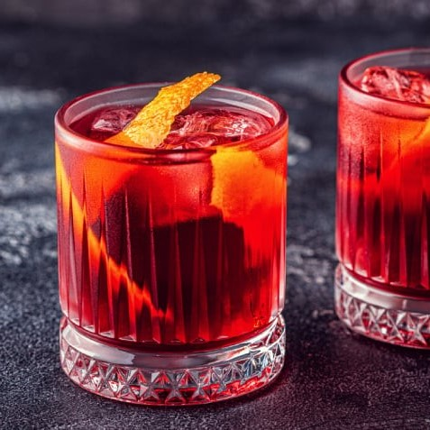
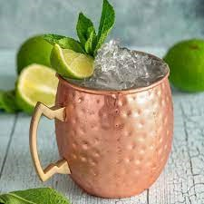

Bebidas
Negroni
1 dose de Vermute
1 dose de Gin
1 dose de Bitter
1 laranja Bahia
Gelo
5 min fácil
Moscow Mule
50 ml de vodka ( 1 dose)
suco de um limão tahiti, 25ml
35ml de xarope de gengibre (Le Lirop de Molin, Gingembre)
gelo a gosto
raspas de limão e folhas frescas de hortelã para decorar
5 min Fácil